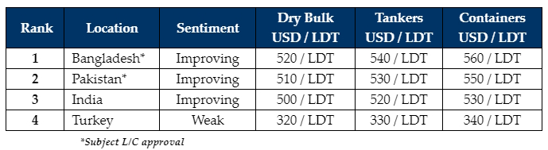

inWeekly Demolition Reports22/04/2024

This week, various holidays concluded across the globe just as Indian sub-continent ship recyclingmarkets started to perk up amidst fundamentals that have independently enjoyed varying degrees of volatility and resurgence over recent weeks. In fact, steel plate prices in Bangladesh & Pakistan remained flatlined at respectively firm levels – the effects of which has only helped these markets grab their share of high-priced fixtures since the start the of the year – all while the ever-volatile Indian plate price that fell last week, firmed, and even surged impressively this week. Currencies too have suffered tragic fates of late as nearly all recycling nation currencies have individually agonized through their own versions of volatility. The recent downtick in freight rates across key trading sectors has finally seen a sudden (and merciful) surge of containers, general cargo vessels, and even tankers being offered for sale into the various destinations – including Turkey, where the situation has gradually suffocated itself into non-existence since about a year now. As such, the overall 2023 dearth of tonnage, which has been further exacerbated by geopolitical violence of late, has eventually led to the virtual shutdown of various ship recycling yards as a result of.
Notwithstanding, a recent re-introduction of containers was the brick to break the price-dam once again as a solo container managed to clear the coveted USD 600/LDT mark (albeit with about USD 20/LDT of fuel included) and this sale in turn has been the pricing aphrodisiac to tempt several Owners of vintage units to test the markets once again, especially now that the various freight sectors may likely see shakes of their own. This ongoing tonnage drought has also made Ship Recyclers increasingly selective on their purchases, especially as Ship Owners and Cash Buyers continue to push for the firmest of levels – even on the occasional overaged vessel that is of a less than preferred Far-Eastern built, or poorly maintained, or laid up, and has eventually resulted in renegotiations at the time of delivery, due to the overall condition these units arrive in.
Recyclers are therefore inclined to bide their time & wait for the right value units to come available, rather than offering firm on whatever comes first in line, just to fill empty plots & end up with a vessel that struggles with weight loss issues during recycling, on account of a higher-than-average wastage of steel or having poorly maintained unsellable machinery onboard. With a majority of such vessels now being largely ignored, Recyclers are also risking leaving their yards empty and precious L/C & banking limits unfulfilled, especially in the event of an uptick in the supply of tonnage amidst further cooling freight rates. As such, it does seem as if each week brings with it, renewed tensions & drama now that the situation between Iran & Israel escalates by the week.
For week 16 of 2024, GMS demo rankings / pricing for the week are as below.

📄 Download PDF: Ship-recycling-market-insight-week-16-2024-Versions_of_Volatility.pdfSource: GMS,Inc.https://www.gmsinc.net/gms_new/index.php/web